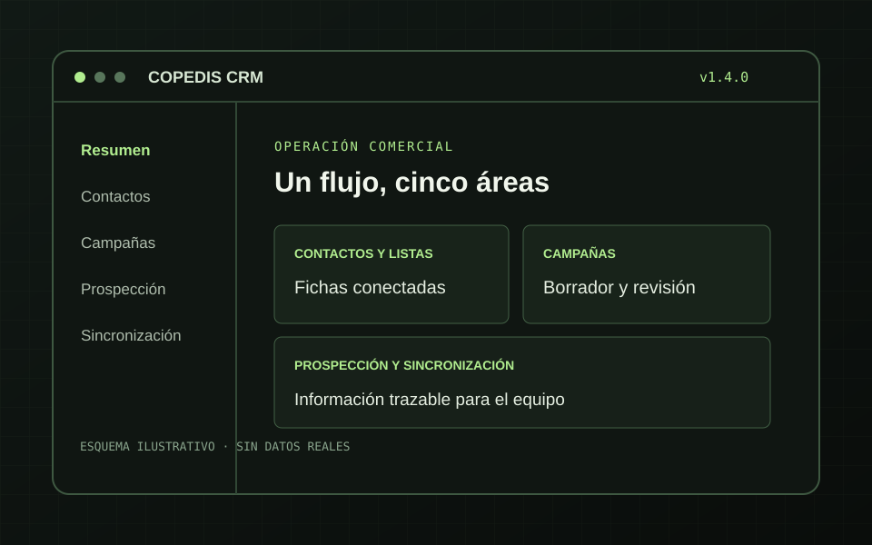

Fichas y listas conectadas
Búsqueda, edición y trabajo por lotes en el CRM. Las listas permiten revisar miembros y abrir la ficha de un contacto existente.
CRM · listas · CSVDesarrollé COPEDIS CRM como aplicación interna para consultar y trabajar con contactos, listas, campañas y leads desde el navegador. La versión 1.4.0 se entregó con ejecutable, código fuente y documentación para su instalación y mantenimiento.
El trabajo abarcaba fichas CRM, listas y campañas de Mailjet, prospección y seguimiento de sincronizaciones. El equipo necesitaba consultar esas áreas y actuar sobre ellas desde una interfaz interna, con diferencias claras entre revisar información, preparar un borrador y autorizar un envío.
La entrega también tenía que ser mantenible: ejecutable para Windows, datos operativos, manual para usuarios, documentación técnica y código fuente de la misma versión.
La interfaz y la API se sirven desde el mismo proceso. Mailjet se integra por HTTPS; la base SQLite conserva el estado operativo y el historial necesario para consulta y seguimiento.
Búsqueda, edición y trabajo por lotes en el CRM. Las listas permiten revisar miembros y abrir la ficha de un contacto existente.
CRM · listas · CSVLas campañas enviadas se consultan en tarjetas; los borradores y las programaciones tienen acciones diferenciadas y requieren revisión antes del envío.
Histórico · edición · controlImportación, asignación, depuración de duplicados y promoción a contacto, junto a una pantalla de sincronización con estado de trabajos.
Leads · conciliación · jobs
El paquete v1.4.0 incluyó aplicación, base operativa, manuales, código y manifiestos de integridad. Las comprobaciones de entrega quedaron registradas antes del empaquetado.
El ejecutable arrancó y respondió con esta versión en la prueba aislada.
Suite local de seguridad y regresión completada en el cierre de entrega.
Comprobación de las bases SQLite incluidas en el paquete.
Trabajos programados con estado consultable, copia de seguridad automática e instrucciones de mantenimiento para informática.
La fuente, el ejecutable, la guía de usuario y la documentación técnica corresponden a la versión entregada.
La documentación acredita el paquete v1.4.0 y sus pruebas de entrega. La instalación en el servidor de destino y los resultados comerciales posteriores no se presentan aquí como hechos verificados. El uso previsto es una red local o VPN autorizada.
Un panel útil debe explicar qué dato muestra, qué acción cambia el estado y qué requiere validación humana. Por eso la aplicación separa consulta, borrador, prueba autorizada y envío.
La entrega se preparó como un sistema que otro equipo técnico puede instalar, revisar y actualizar sin depender de una copia de desarrollo.
Cuéntame qué herramientas utilizáis y dónde se pierde tiempo o visibilidad. Podemos definir un flujo que tu equipo pueda usar y mantener.
Hablemos del proyecto